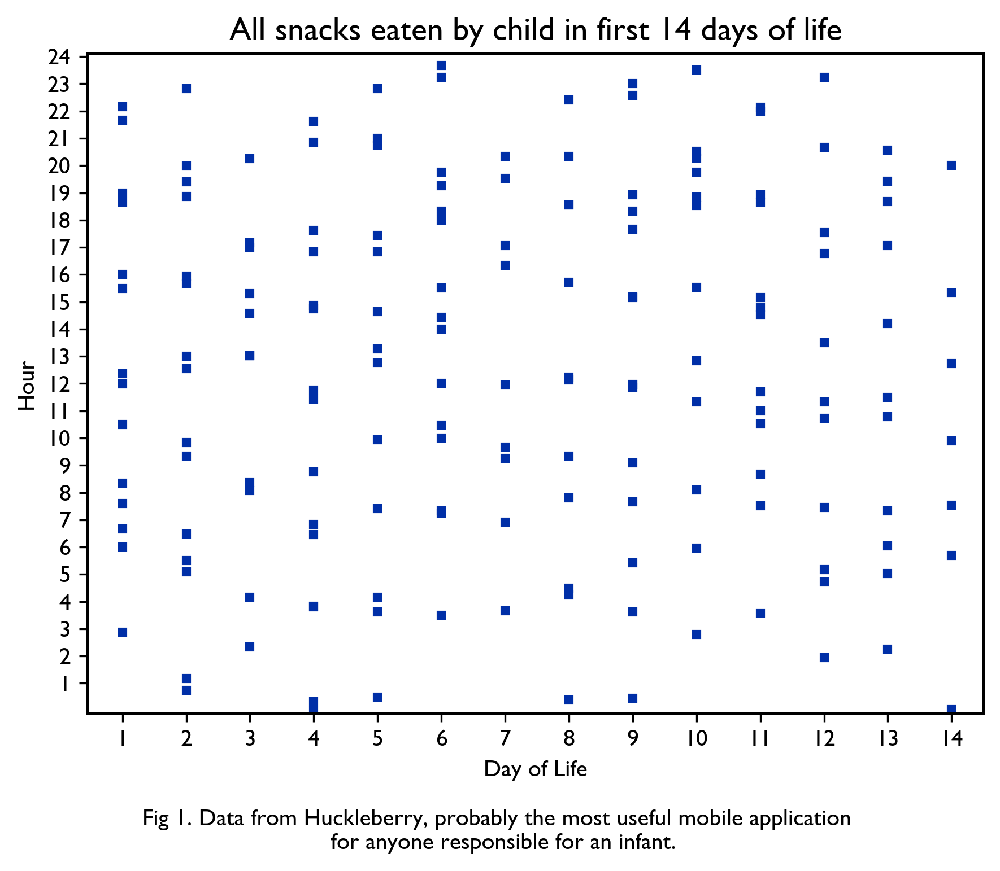

← back // zpět ←
2025-05 | I must know how fine you are in your way
Some months everything happens at once. Our flat gained a new inhabitant, who is very nice. (His arrival brings the population density to 78,000 people per square kilometer, but the neighbours have got us beat - in the same type of studio flat, they are three nice rugby players and a pitbull.)

Our paper on how the healing of the ozone hole helps the Southern Ocean take up carbon is out. The Montréal protocol — which banned the chlorofluorocarbons that damage the ozone layer — remains one of the best examples of people working together sensibly to solve common problems. Our work shows, among other things, that the damage to the Southern Ocean carbon uptake is reversible, if we keep greenhouse gas emissions down. (That’s a rather big if.) This paper is also, to my knowledge, the only paper published to date in Science Advances that takes one of its colour schemes from the Prague metro lines (including the as-yet-aspirational Metro D, Fig. 5).
Moje obskurní dizertačka má shrnutí v časopise Vesmír, který publikuje od roku 1871, kdy byl založen nadšeným studentem se super přijmením Kompošt. Mám všeobecně velkou lásku k těmto nenápadným dlouhotrvajícím publikacím pro nadšence — napadá mě třeba CMJ, Czechoslovak Mathematical Journal, kde jsem jeden čas byla jazykový korektor. Že Československo neexistuje CMJ absolutně netrápí, CMJ dál publikuje niche topologii pro malou ale celosvětovou sít’ tichých brýlatých lidí co pijou hodně čaje. Keep thriving bb.
Sarah Ruggins set the overall world record for cycling John O’Groats to Land’s End and back (the length of Great Britain back-to-back), in a roughly five-day cycle that was just so elegant. Everything about that story is quite remarkable - Sarah spent teenage years bedbound and thought she would never walk again and bought her first bike two years ago at age 35. (The former record holder, instead of being annoyed at the threat to his record, mentored her to prepare for it, which is nice to see.) There’s the obvious question of “why cycle as fast as you can across Britain and back, sounds painful, sports are dumb”, and I get that, but at the same time there is this sort of illogical, raw transcendence to seeing really beautiful gestures of athleticism, whether it’s this or the Dawn Wall ascent or Maradona’s 1986 goal. I realize it’s the same cadence of joy as from watching my friend C dance.

A funny balance to think about: I grew up with an emphasis on ‘performance’, both at home and by virtue of a childhood spent partly in the United States of America, where it is relatively common for people, upon meeting you, to tell you where they went to college (and sometimes where their children whom you will never meet went to college, which is, in fact, insane). To some extent this orientation to goals is useful — doing difficult things takes effort and some difficult things are worth doing — but I’ve seen firsthand what happens when a person focuses more on ‘achievement’ than anything else and then the bottom falls out of things. Tritely, it’s a balance. Someone recently told me “we live in a doing-oriented culture, and parenting is more about being”, which was a helpful framing. {Sometimes the right words said in the right order can bring clarity to a marass. Less and less as time goes on, I think, but there’s a satisfying click when it does happen.}
I read Jolly Lad, the memoir of John Doran, the editor of the Quietus. It’s about a lot of things and at once harrowing and thoughtful and deeply funny. There is northern England in the 80s and music and alcoholism and the reckoning happens when an alcoholic stops drinking, and also revelations of new parenting. At points it begs the question “How did John Doran survive the Thatcher years in Hull?”, and it may be a bit graphic for sensitive readers, but I really enjoyed it. It’s based in part on his great series MENK for VICE.
This many-hour documentary of an Englishman making his way down the Thames from source to sea is extremely British (in one specific way) and also peak slow youtube if you find yourself bedbound (like me).
songssongssongs
Nick Drake reappeared in my life at the strangest moment recently. It was very welcome.
A sunlit evening in M’s kitchen reminded me that somehow, this remains one of the best songs ever written. (A friend once described Van Morisson as “maybe the only genuinely mystical pop music of the 20th century, which is funny because he’s such an idiotic bitter little troll”)
Su ráda že tento banger má opět své místo v mém životě.